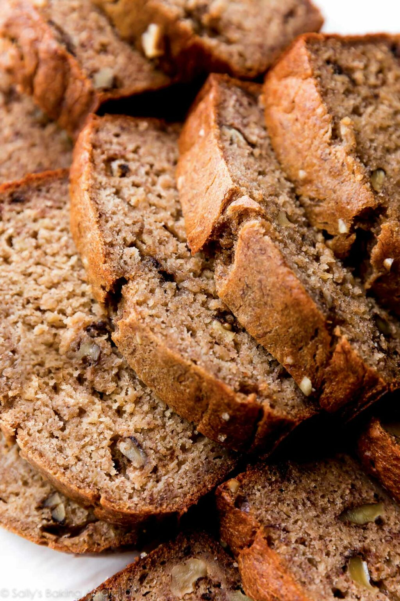

Banana Bread

Description
This is looking like a good classic banana bread recipe.
Ingredients
- 1 1/2 cups all-purpose flour
- 1 teaspoon baking soda
- 1/2 teaspoon salt
- 1 cup white sugar
- 2 eggs, beaten
- 1/4 cup butter, melted
- 3 bananas, mashed
- nuts, if desired
Kitchenware
- oven
- "grease"
- two 7x3-inch loaf pans
- mixing bowl
- measuring cups + spoons
- microwave
- microwavable bowl
- "whisk"
- oven mitts
- paper towels, always
- timer
- toothpick
Steps
- Preheat the oven to 350 degrees F (175 degrees C). Grease and flour two 7x3-inch loaf pans.
- In one bowl, whisk together flour, baking soda, salt, and sugar. Mix in slightly beaten eggs, melted butter, and mashed bananas. Stir in nuts if desired. Pour into the prepared pans.
- Bake in the preheated oven for 1 hour, or until a wooden toothpick inserted in the center comes out clean.